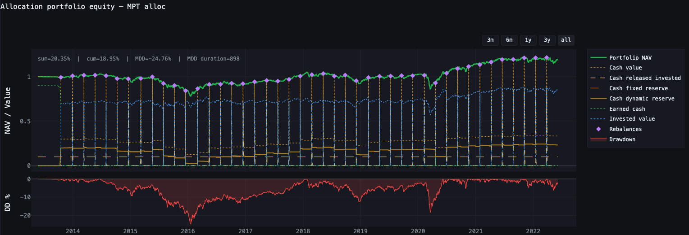
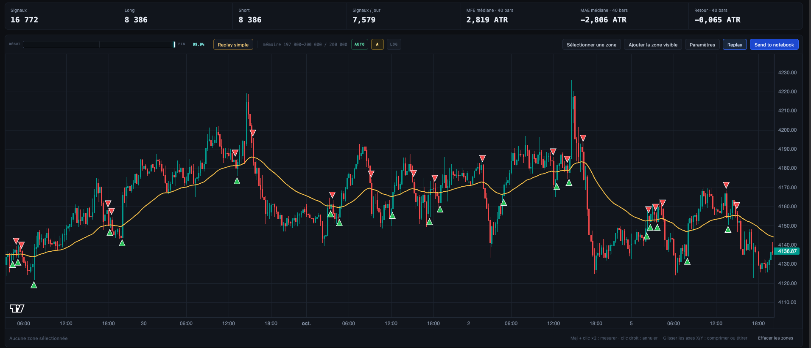
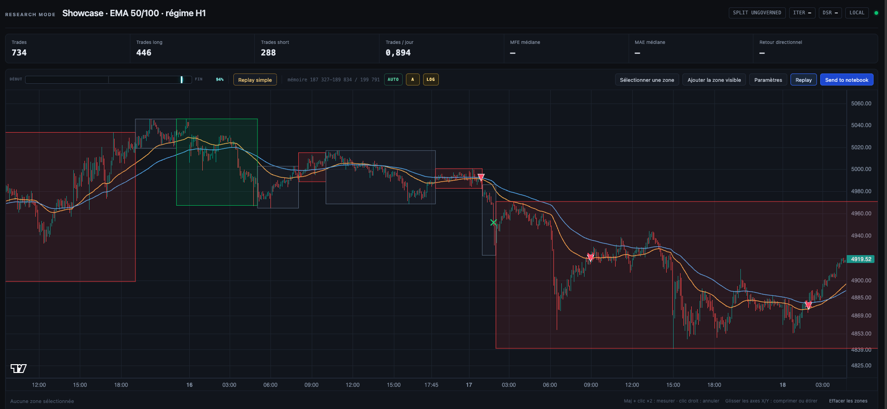
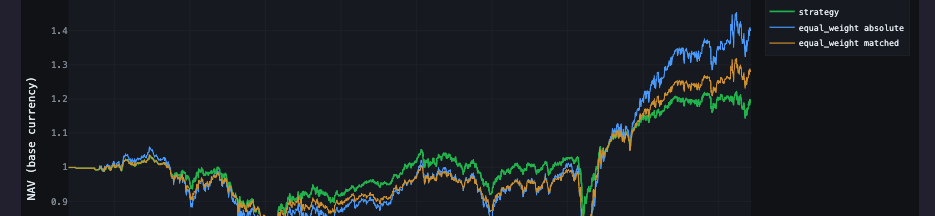
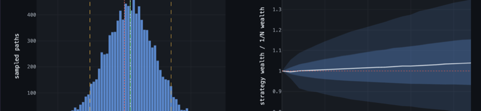
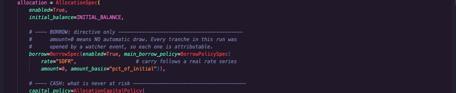
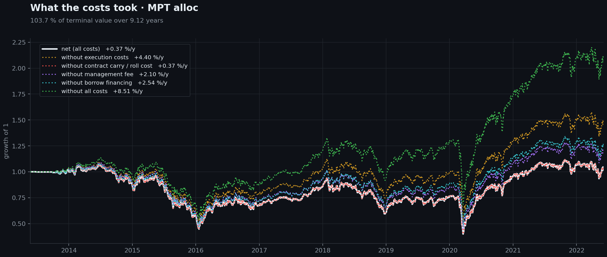
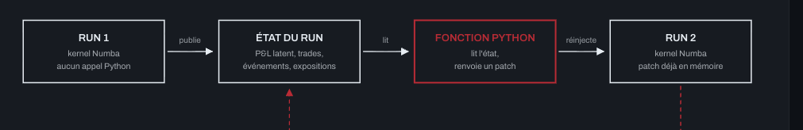
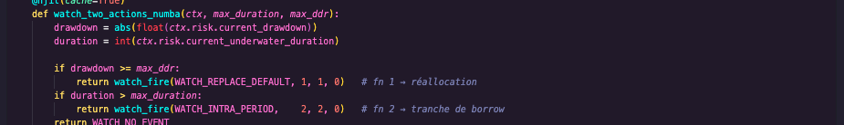

Préparer l'étude
Le travail se fait dans un notebook préconfigurable, avec une API simple : vous configurez l'emprunt, la gestion du cash, et plus encore.
Transformez une idée ou une intuition en résultat testé, de la façon la plus simple et fiable possible.
Une stratégie, une pondération ou un fonds à tester dans une allocation.
Trésorerie, frais, devises et conditions d'exécution entrent dans le calcul.
Performance et drawdown, puis des tests statistiques : le résultat tient-il, ou relève-t-il du hasard ?

Exemple d'utilisation
Le travail se fait dans un notebook préconfigurable, avec une API simple : vous configurez l'emprunt, la gestion du cash, et plus encore.
Tout est déjà branché, il ne reste plus qu'à insérer votre stratégie dans le cadre prévu.
Chaque paramètre est documenté, facile d'accès et d'import au moment où l'étude se configure.
Via le panneau de navigation du notebook, à gauche, un clic lance le backtest et affiche les premiers résultats.
Le travail se fait dans un notebook préconfigurable, avec une API simple : vous configurez l'emprunt, la gestion du cash, et plus encore.
Un noyau partagé pour concevoir, tester et suivre une stratégie.
Le mode algorithmique permet de tester et d'évaluer des stratégies systématiques, avec leur propre logique de signal, de sizing et de gestion du risque.
Prend en charge la construction et le suivi de portefeuilles multi-actifs et, à terme, multi-produits, avec des règles de pondération, une comptabilité de portefeuille avancée et personnalisable, et un rebalancement intégré au mode, configurable.
Facilite la recherche et la création de tout type d'indicateur, avec leur visualisation façon plateforme de trading. À terme, permet de projeter des graphiques en tout genre liés à l'évolution des prix, dans l'esprit d'outils comme Quantower.
Permet de tester des stratégies systématiques à faible volume de transaction, pour un montant investi au comptant. Bénéficie de la comptabilité du mode Allocation, sans le système de levier du mode Algorithmique.

Développer un indicateur et mesurer ce qui suit ses signaux, comparés à des entrées au hasard et à la version précédente. Le résultat s'affiche sur un graphique relié au notebook, jusqu'au freeze et au hors échantillon.

Transformer un signal en stratégie : choix des entrées, gestion des positions à quatre niveaux, frais d'exécution et sizing. Chaque trade reste inspectable, du prix visé au prix exécuté.

validation_baseline, validation_null_sizing, validation_null_leverage.
validation_baseline, validation_purchasing_power, validation_oos_retention, validation_null_leverage, validation_cross_asset, validation_mc, validation_edge_concentration, validation_dsr, trial_counter_status et freeze_configuration.
Le code réel que l'utilisateur écrit et la sortie réelle que le moteur renvoie. Quarante lignes déclarent les réserves, l'emprunt indexé, les frais à deux horloges et quatre devises. Le bilan boucle à l'unité près.

Spread, commissions, taxes, slippage, carry, frais de gestion et financement : comment sont-ils calculés et appliqués pour un backtest réaliste et robuste en mode spot ?

Comment un kernel compilé prend des décisions qui dépendent de son propre passé. Trois régimes, trois schémas, et ce que chacun coûte.

Le moteur algorithmique, publié : de quoi définir un signal, le faire tourner sous un modèle d'exécution réaliste, et inspecter les trades produits.
Une stratégie peut progressivement perdre l'edge qui justifiait son déploiement. Le prochain axe de développement cherchera à détecter, voire anticiper, cette dégradation avant qu'elle ne se traduise par des pertes significatives, afin de réduire ou retirer l'exposition suffisamment tôt.
Un passage forcé à plat peut éviter un événement qui détruirait la stratégie, mais aussi coûter davantage que la protection apportée. Le travail cherchera à déterminer quand déclencher cette mesure et à partir de quel seuil son coût dépasse son bénéfice.
Le reverse stress déterministe déjà en ligne constitue le point de départ : il mesure ce que la protection coûte lorsqu'elle se déclenche.
Aucune stratégie gagnante n'est présentée ici. La stratégie testée est une construction de manuel, retenue parce qu'elle est connue et reproductible. L'objet de ces pages est l'instrument qui la juge.
Turn an idea or a hunch into a tested result, as simply and reliably as possible.
A strategy, weighting or fund to test in an allocation.
Cash, costs, currencies and execution conditions enter the calculation.
Performance and drawdown, then statistical tests: does the result hold up, or could it be chance?
Example of use
Work takes place in a preconfigured notebook with a simple API: configure borrowing, cash management and more.
Everything is already connected. Add your strategy to the prepared framework.
Each parameter is documented, easy to access and import while the study is configured.
One click in the notebook's left navigation panel launches the backtest and displays the first results.
Work takes place in a preconfigured notebook with a simple API: configure borrowing, cash management and more.
One shared core for designing, testing and monitoring a strategy.
Algorithmic mode tests and evaluates systematic strategies, each with its own signal logic, sizing and risk management.
Builds and monitors multi-asset and, over time, multi-product portfolios, with weighting rules, advanced and customizable portfolio accounting, and rebalancing built into the mode and configurable.
Enables research and creation of all kinds of indicators, with trading-platform-style visualisation. Over time, it will project charts of price evolution in the spirit of tools such as Quantower.
Tests systematic strategies with low transaction volume and a cash investment. It uses Allocation's accounting without Algorithmic mode's leverage system.
Develop an indicator and measure what follows its signals, compared with random entries and with the previous version. The result appears on a chart linked to the notebook, all the way to the freeze and out-of-sample test.
Turn a signal into a strategy: entry selection, four levels of position management, execution costs and sizing. Every trade stays inspectable, from target price to executed price.
validation_baseline, validation_null_sizing, validation_null_leverage.validation_baseline, validation_purchasing_power, validation_oos_retention, validation_null_leverage, validation_cross_asset, validation_mc, validation_edge_concentration, validation_dsr, trial_counter_status and freeze_configuration.The real code that is written and the real output it returns. Forty lines declare the reserves, the indexed borrowing, fees on two clocks and four currencies. The balance sheet closes to the last unit.
Spread, commissions, taxes, slippage, carry, portfolio fees and financing: how are they calculated and applied to a realistic and robust backtest in spot mode? French only for now.
How a compiled kernel makes decisions that depend on its own past. Three regimes, three diagrams, and what each one costs. French only for now.
The algorithmic engine, published: enough to define a signal, run it under a realistic execution model, and inspect the resulting trades.
A strategy can gradually lose the edge that justified its deployment. The next line of development will seek to detect, or even anticipate, that deterioration before it translates into significant losses, so exposure can be reduced or withdrawn early enough.
A forced move to flat can avoid an event that would destroy the strategy, but it can also cost more than the protection it provides. The work will seek to determine when to trigger that measure and at what threshold its cost exceeds its benefit.
The deterministic reverse stress already online provides the starting point: it measures what the protection costs when it is triggered.
No winning strategy is presented here. The strategy under test is a textbook construction, chosen because it is well known and reproducible. What these pages are about is the instrument that judges it.